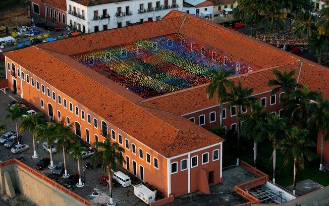
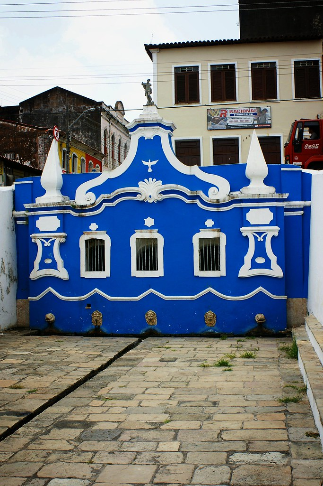

Top 3 lugares para visitar em São Luis
Passear na Avenida Paulista!

Palácio dos Leões é o edifício-sede do governo do estado brasileiro do Maranhão. Localiza-se no centro histórico da cidade de São Luís, na área designada Patrimônio Mundial pela UNESCO. Com uma história que começa no início do século XVII, o Palácio dos Leões um dos maiores símbolos da cultura maranhense.
Esta atração está sempre movimentada veja mais sobre nesta reportagem de um jornal local ?
Convento das Mercês
Construído em 1654 e tombado como Patrimônio Histórico Nacional, o convento foi inaugurado pelo padre Antônio Vieira, e nele funcionou o Convento da Ordem dos Mercedários. Pertenceu ao estado maranhense de 1905 a 1990, quando o então governador João Alberto de Souza doou o edifício à Fundação José Sarney, seu aliado político. Em junho de 2009, a Justiça decretou a devolução do prédio histórico ao patrimônio estatal e, em outubro do mesmo ano, a Fundação foi fechada após denúncias de desvio de verbas A partir de 2011 passou a abrigar a Fundação da Memória Republicana Brasileira, instituição pública estadual que administra o museu, biblioteca, pinacoteca, sala de restauração, e amplo acervo documental.
Veja como chegar até o Convento das Mercês.
Fonte do Ribeirão
A Fonte do Ribeirão é um exemplar valioso da arquitetura da época colonial. Foi construída em 1796 pelo governador Dom Fernando Antônio de Noronha. Recoberto de pedras de cantaria e cercado por dois paredões, a Fonte é ornamentada com um frontão decorado com símbolos religiosos que estão apoiados em duas pilastras laterais.
A fonte do ribeirão é conhecida tambme por seus misterios veja mais sobre na reportagem.
E existem muitos outros lugares interessantes na cidade...
- O Mercado Central.
- Museu do Ìndio.
- Igreja da Sé
- Espigão Costeiro.